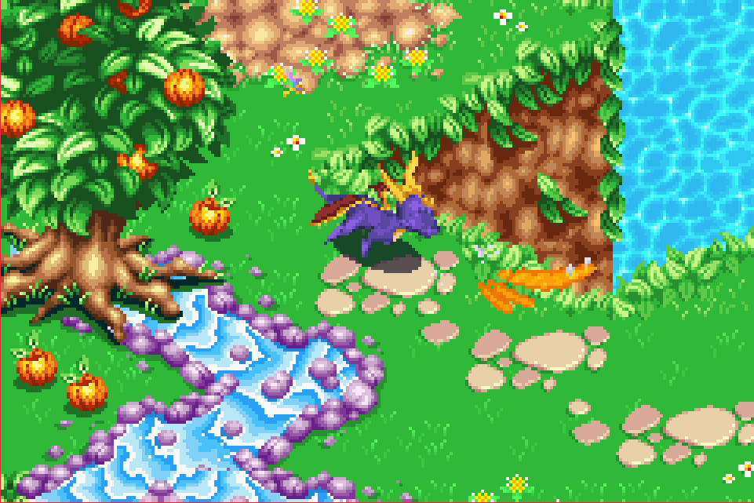
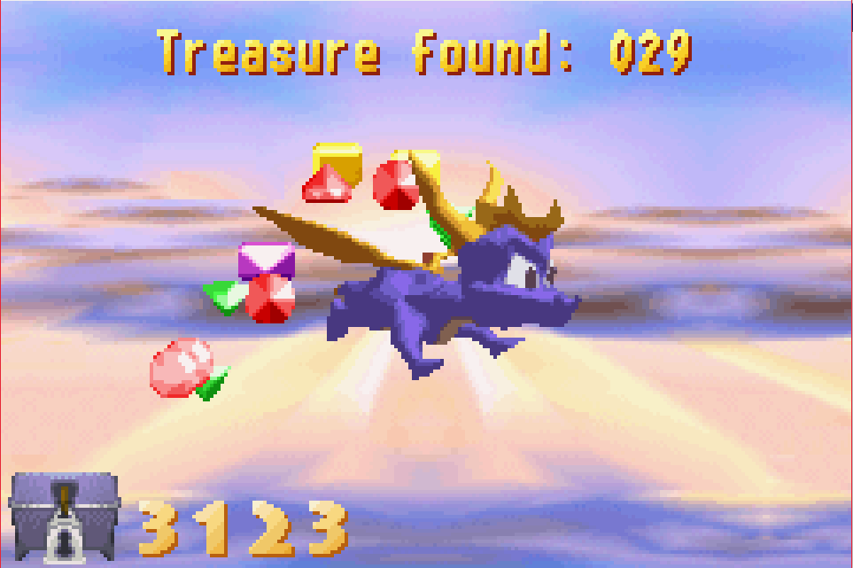
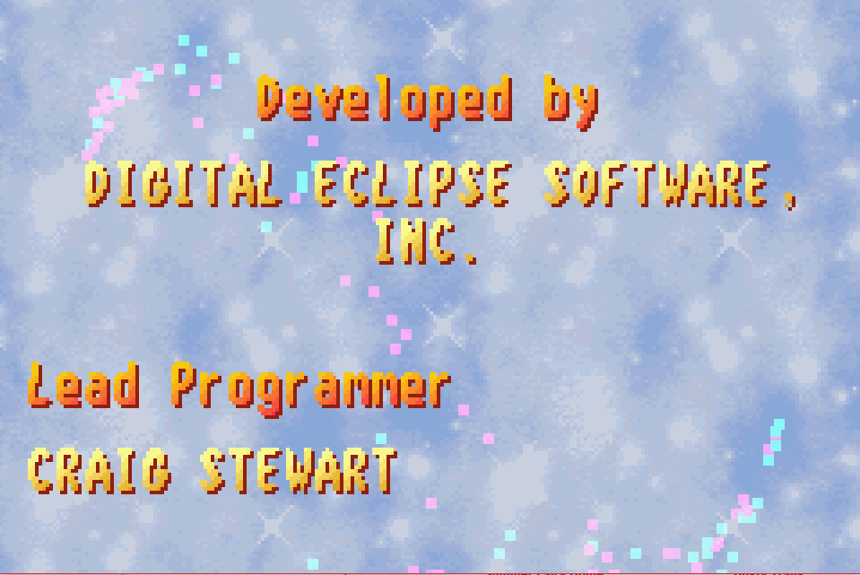
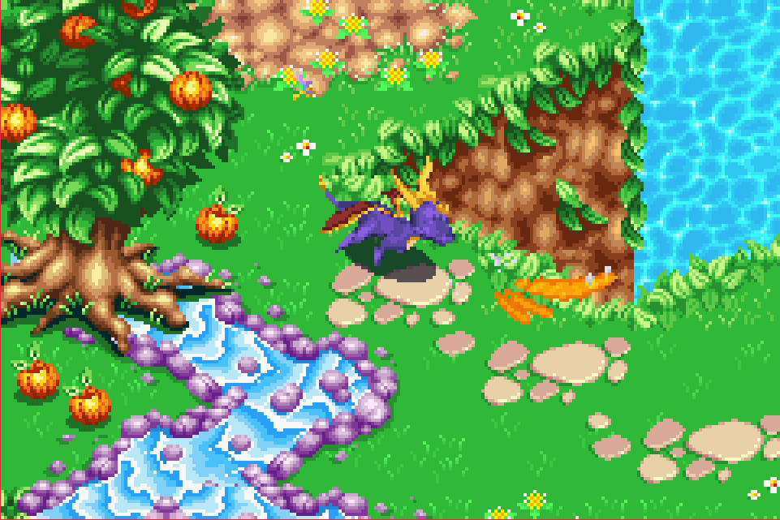
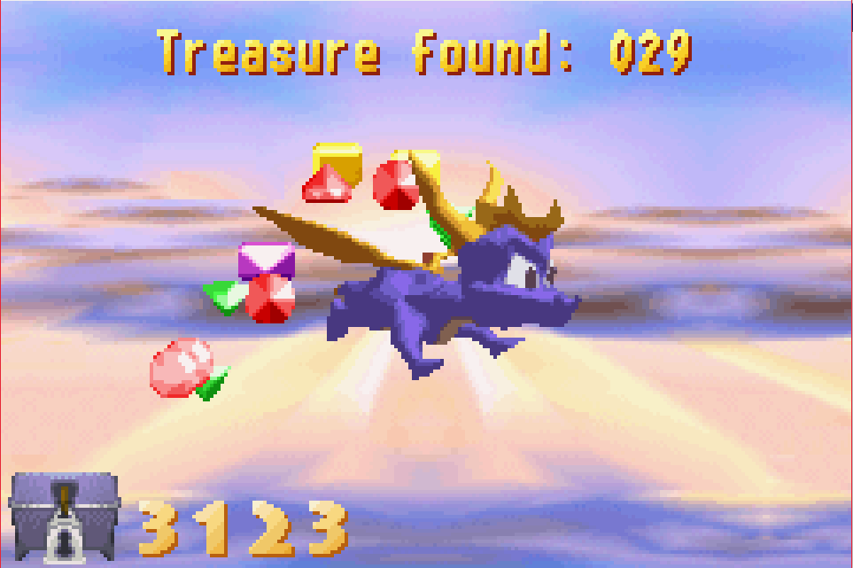
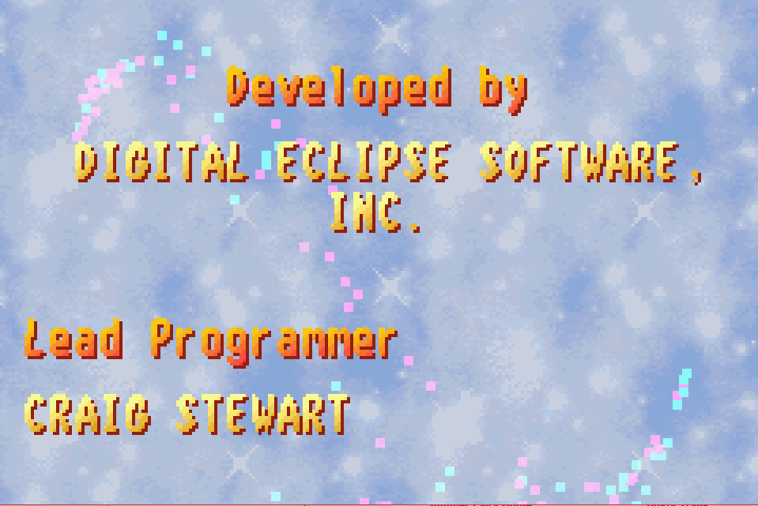

Complete on 2017-06-02
Complete on 2017-06-02
3 / 5
Release Date: Oct 29, 2001
Meta Score: 74
Complete on 2017-06-02
3 / 5
Release Date: Oct 29, 2001
Meta Score: 74
 





Spyro: Season of Ice is an isometric 3d platformer with 2d graphics. It's a sequel to the classic 3d collectathon platformer series from the Playstation 1 era. Unlike the home console series and other sequels, which have gone in some crazy directions, Season of Ice is a direct sequel to the original trilogy and sticks pretty close in terms of gameplay too. I'm a big fan of the PS1 Spyro games.
You explore isometric 3d worlds as Spyro, a juvenile purple dragon, accompanied by his faithful dragonfly pal Sparx. An Rynoc has stolen the sorceresses' spell book (from Spyro 3) and has accidentally given himself 2 heads in an attempt to become smart. He needs 100 pairs of fairy wings to brew a potion to fix himself, and so has cast another spell to encase all the fairies in ice. Spyro, being the designated hero, has to go and save them and defeat the bad guy. Standard stuff, and the main villain is pretty nonthreatening and forgettable compared to some of the characters in the original series, but it gets the job done.
The gameplay is basically the same as the originals, with Spyro charging, flaming, jumping and gliding to get around and collect gems and free fairies.
The shift to isometric graphics on the gba's small screen hasn't gone perfectly though. The camera feels very close in, and combined with the repetitive tiled graphics it's very difficult to stay oriented as you navigate around. In the later levels too you need to do long glides over bottomless pits, and it can sometimes be hard to tell what height platforms are, and so whether you can reach them.
The game has issues with its difficulty curve I think. When you die, none of the enemies come back (which is nice as one of your objectives in each level is to kill all of the enemies). However, some objectives, like the flammable objects in every level, do reset. This can make the game very frustrating as you try and find the last thing to finish up and get the fairy, but make one slip into one of the omnipresent bottomless pits and have to start all over. This is extra frustrating when you can't find your way back to where you were because of the hard to navigate levels.
Those bottomless pits are the game's biggest problem. They're everywhere and they always kill you instantly. (Often they're actually water rather than pits but it's functionally the same). This saps a fair bit of fun out of the game. I think they could have made it a lot more fun if falling in a pit took away one hit point, rather than killing you instantly. That would remove a lot of the frustration.
Another annoyance is that whenever you complete an objective the game teleports you back to the questgiver who gives you the fairy. This can be really irritating when that's all the way across the level. I also had issues with the camera control. You can hold L and press the directional buttons to look around, but if you're not completely stopped when you do so you'll just walk instead. More than once this lead to me accidentally falling off a ledge when I was trying to look across the gap.
Each of the 4 hub worlds also has two non-platformer levels. There's a flying "speedway" stage where you control Spyro in an over-the-shoulder flying and shooting level. These are fun enough, but having to play twice on both normal and hard to get 2 fairies feels a bit like filler. Depth perception is an issue in these stages, as is replaying them to get all the gems. The exception is the final one on hard which is brutally hard. And remember you need to beat this to finish the game.
There are also top down stages where you play as Sparx, which revolve around finding keys to open doors and fighting insect enemies. Not particularly inspired but not bad.
The boss fights are dissapointing. There are only 2, at the halfway point and the end, and they play identically apart from cosmetic changes.
I beat this one 100% (because you haven't really played a Spyro game if you haven't obsessively collected every gem). You have to get all 99 fairies to get to the final boss anyway, which is a bit of a harsh requirement compared to other games in the series where you just need a good chunk of the collectables to finish the game. There's also a bonus level for getting 100 fairies (1 from the final boss). The game is fairly short, I beat it in the best part of a day.
I enjoyed it, but its flaws mean it gets frustrating at times. I referred to maps of the levels a few times, which make it so much easier to find your way around.